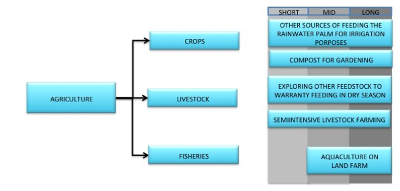

The Federation of Saint Kitts and Nevis is a democratic and sovereign country. The impacts of Climate Change are global and St. Kitts and Nevis, along with the International community are committed to addressing the adverse effects. In addition, climate change is one of the most critical issues facing the Caribbean region and it is already being experienced through rising sea levels, increasing mean temperatures and changes in rainfall and weather patterns. All these impacts, in many ways, affect the socio-economic development of the country in sectors such as St. Kitts and Nevis Tourism, Agriculture and Water.
St. Kitts and Nevis sustainability, as a nation, is dependent upon the collective and global response to aggressively reduce St. Kitts and Nevis Greenhouse gas emissions (GHG). In this regard the Federation of St. Kitts and Nevis proposes an emissions reduction target of 22% and 35% of St. Kitts and Nevis GHG emissions projected in the business as usual (BAU) scenario for 2025 and 2030 respectively.
The National Conservation and Environmental Protection Act (NCEPA) articulates strategic approaches to environmental protection, and serves as a framework for the declaration of sensitive ecological and historic sites that presents clearly vulnerability to climate change and vulnerability.
The Federation of Saint Kitts and Nevis, hereby communicates its Intended Nationally Determined Contribution (iNDC) towards achieving the UNFCCC objective as set out in Article 2 of the Convention, and in accordance with decisions 1/CP.19 and 1/CP.20.
| The reference point | 22% of the absolute GHG from the Business as Usual (BAU) in 2025. 35% of the absolute GHG from the BAU in 2030. | ||||||||||||||||||
| Time frame and/or Implementation period | The time frame to implement the iNDC is from 2020-2030, mid-term review in 2025. | ||||||||||||||||||
| Type of commitment or contribution | St. Kitts and Nevis type of commitment is in terms of absolutes numbers GHG reduction from the BAU. | ||||||||||||||||||
| Scope and coverage | All the economic sectors are covered and targeted into St. Kitts and Nevis’ national contributions, but with special attention to the Energy and Transport sectors, since they are the highest contributors to the GHG national matrix. The high percentage of consumption is based on fossil fuels. | GHG Coverage: CO2 | |||||||||||||||||
| Geographic Coverage: National | |||||||||||||||||||
| Percentage of National coverage: 100% | |||||||||||||||||||
| Planning processes | The iNDC preparation has been built upon from previous climate and non-climate activities and includes a consultative process, involving key actors to obtain useful information at the sectoral level.
The implementation process is still under discussion to ensure that there is highest participation and ownership from the key actors. A very comprehensive plan for the implementation phase must take place to track and monitor the policies and measures within the iNDC. |
||||||||||||||||||
| Assumptions and methodological approaches | The methodology used to measure and monitor St. Kitts and Nevis’ national contributions is “Revised 1996 IPCC Guidelines for National Greenhouse Gas Inventories”.
St. Kitts and Nevis’ iNDC is conditional and based on the availability of financing and technological support. St. Kitts and Nevis supports the inclusion of the International Carbon Markets and any other Market Mechanisms in a post-2020 agreement on climate change and any future emission reductions pre-2020, should be accounted as part of our contributions. |
||||||||||||||||||
| Level of ambition in iNDC | St. Kitts and Nevis is committed to tackling the adverse impacts of climate change. It considers its iNDC to be ambitious and continues to exhibit evidence of environmentally sound development. Furthermore, St. Kitts and Nevis’ inventories of GHGs demonstrate that the country is a net sink for global carbon emissions, although like other Small Island Developing States, it is expected to bear the brunt of the impacts.
St. Kitts and Nevis proposes to reduce its GHG emissions by focusing on electricity generation and the transport sector. Under its proposed mitigation actions it is intended that the policies and measures would increase the use of renewable energy sources by 50%, taking into consideration that this ambitious target could be considered risky within the short time frame. To reduce the risk St. Kitts and Nevis must ensure that the relevant policies and measures are created within its natural, financial, technological and human resources to implement the measures necessary to achieve the intended emissions reduction |
Policies and Measures |
|
SHORT |
MID |
LONG |
|||||||||||||
|
GEOTHERMAL SOURCES |
|
At least 35 MW |
|||||||||||||||||
|
SOLAR SOURCES |
At least 1859 kW |
||||||||||||||||||
|
WIND SOURCES |
|
At least 7.6 MW |
|||||||||||||||||
|
WATER SOURCES |
|
|
0.5 MW |
||||||||||||||||
|
SMART METERS |
Losses reduces at least at 50% of the actual |
||||||||||||||||||
|
NET METERING |
|||||||||||||||||||
|
REPLACEMENT/RETROFITTING OF INEFFICIENT EQUIPMENT |
At least reduce 5% of the national energy consumption |
||||||||||||||||||
|
AUTOMATION OF HIGH CONSUMPTION EQUIPMENT |
|||||||||||||||||||
|
INCENTIVE FOR MORE EFFICIENT VEHICLES |
At least reduce 5% of the national fuel consumption |
||||||||||||||||||
|
TAX ON VEHICLE WITH HIGH FUEL CONSUMPTION |
|||||||||||||||||||
|
RETROFITTING INEFFICIENT VEHICLES |
|||||||||||||||||||
|
MORE EFFICIENT PUBLIC TRANSPORTATION |
|||||||||||||||||||
|
NEW ALTERNATE INFRASTRUCTURE |
|||||||||||||||||||
|
ROAD REPAIR/CREATION OF NEW ROADS |
|||||||||||||||||||
|
PARKING AND TRANSIT REGULATION |
|||||||||||||||||||
|
Details in Annex 1. |
|||||||||||||||||||
| Estimation of GHG Impacts |
| ||||||||||||||||||
The Federation of Saint Kitts and Nevis is committed to building resilience and mitigating the negative impacts of external shocks including natural disasters, according to NCEPA, and many others institutional and regulation requirement that have been developed in the country.
For St. Kitts and Nevis the most vulnerable sectors and areas include:
Climate change is one of the major threats for key vulnerable sectors that are linked to vital pillars for sustainable development. Forestry and water supply are intimately linked to potable water, tourism, and agriculture. Moreover, St. Kitts and Nevis, a twin island state, is abundant in nearshore and marine resources which provide the basis for a range of economic and social activity relevant to the tourism and fishing industries. Some of these marine resources include coral reefs, beaches, mangroves, freshwater lagoons and sea-grass beds. Tourism, water supply and coastal infrastructure, are also being affected by the sea-level rise, saline intrusion and flooding.
St. Kitts and Nevis wishes to highlight three areas in its iNDC that are considered important to its social and economic sustainability and their interlinkages with others sectors.
St. Kitts and Nevis plans develop a comprehensive plan to build resilience in the following sectors:



St. Kitts and Nevis is aware of the importance of developing a comprehensive plan which must serve as the preparation stage for the implementation process.
In order to ensure the effective implementation of the plan proposed above, the local actors must be involved and therefore empowered and prepared to execute the necessary tasks. The preparation process may require, inter alia, technical training, capacity building workshops, expert guidance, and feasibility and technical studies. It is important to highlight the relevance of the institutional capacity, as well as the necessary establishment of institutional coordination and political support to meet the desired national goals. Furthermore, technical and economically feasibility studies for all levels of implementation (actions, projects, programs, policies), as well as a comprehensive analysis for policy implication would be required. It is also relevant to prepare a sectorial financing plan with specific funding sources and disbursement planning to implement the necessary policies and measures.